Usage¶
Please note that all development and testing has only been performed on Windows 10/11. Since SCiLS Lab and its API are primarily developed for Windows, although it may function, compatibility cannot be guaranteed for mac OS and Linux.
GUI¶
The SCiLS Lab iprm-PASEF Exporter tool can be started by downloading it directly from the Github releases page,
unzipping the folder, and opening iprm-PASEF_Exporter.exe. The following window should appear.
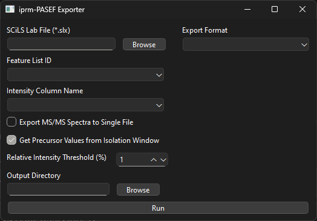
Browse for and open an iprm-PASEF SCiLS Lab dataset using the “Browse” button under “SCiLS Lab File”.
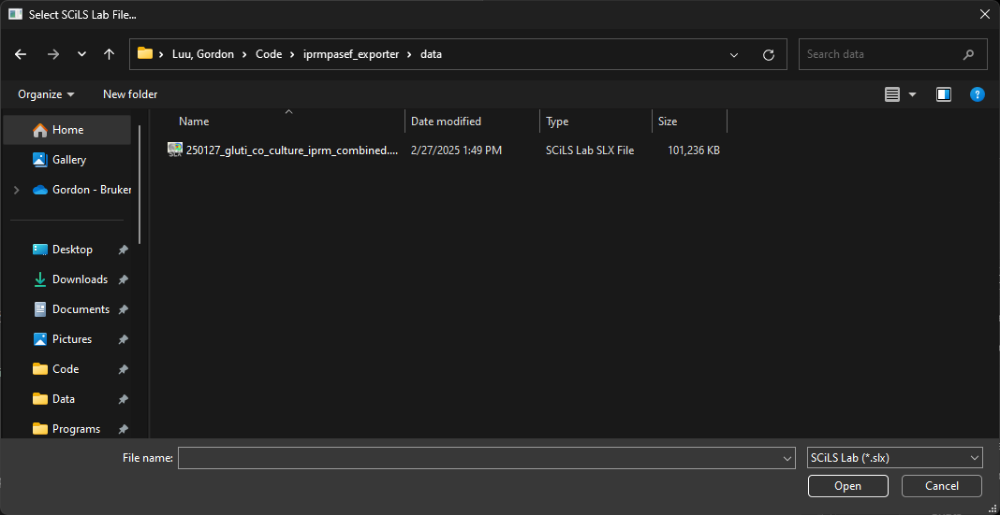
Once the file has been loaded, the “Feature List ID” dropdown menu will be populated. Select the feature list containing the iprm-PASEF MS/MS precursor and fragment data of interest.
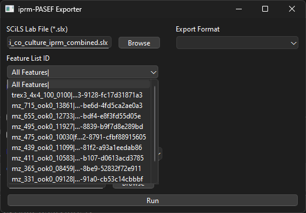
From that feature table, an “Intensity Column Name” will need to be selected, which will specify which column should be used to obtain intensity values for each precursor/fragment ion to be exported (either user added or the default intensity column).
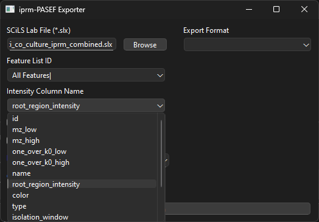
By default, the intensity column that is included following T-ReX^3 feature finding for iprm-PASEF SCiLS Lab projects uses non-normalized intensity values. Therefore, a custom intensity column containing normalized intensity values should be added prior to MS/MS export if desired.
If the “Export MS/MS Spectra to Single File” option is selected, all MS/MS spectra from a single *.slx file will be exported to a single file. Otherwise, separate *.mgf or *.mzML files will be exported for each precursor isolation window.
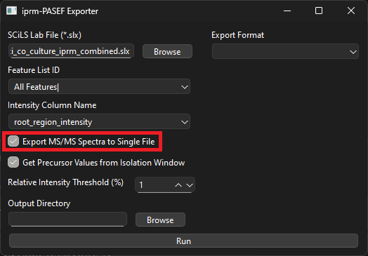
If the “Get Precursor Values from Isolation Window” option is selected, the precursor ion information is populated using the isolation window m/z and 1/K0 ranges. Otherwise, the precursor ion information (m/z and 1/K0) is obtained from any detected precursor features in the iprm-PASEF MS/MS dataset’s feature table. By default, this option is enabled as the precursors that are detected from the iprm-PASEF MS/MS dataset can be inaccurate in certain cases. As an example, if a precursor is completely fragmented and no precursor signal remains in the dataset but a noise peak is detected within the isolation window, a false and inaccurate value will be assigned as the “precursor”.
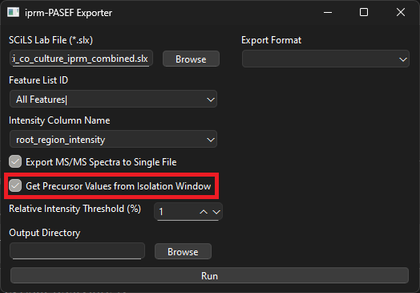
If the “Get Precursor Values from Isolation Window” option is not selected, the precursor ion information (m/z and 1/K0) is obtained from any detected precursor features in the iprm-PASEF MS/MS dataset’s feature table. If no precursor is detected for a given precursor isolation window, the precursor ion information is populated using the isolation window m/z and 1/K0 ranges as a fallback.
By default, all fragments peaks with a relative intensity of < 1% are discarded prior to export. This percentage can be modified. To disable thresholding completely, set the value to 0%.
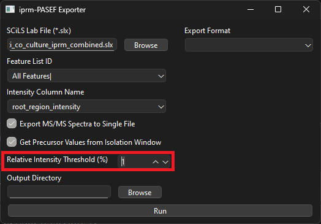
The location in which the resulting converted files are saved can be selected using the Output Directory dialogue. If no path is selected, the converted files will be placed in the same directory as the input *.slx file.
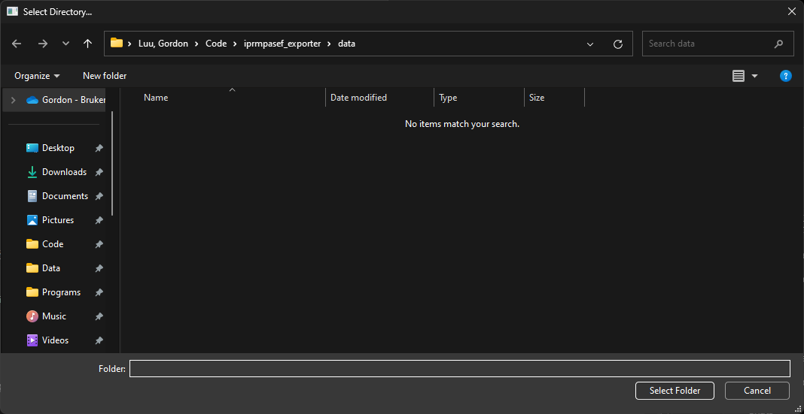
MGF or mzML files can be exported, which is specified under the “Export Format” dropdown menu. All other parameters can either be left at their default values or modified if needed. See below for a description of parameters.
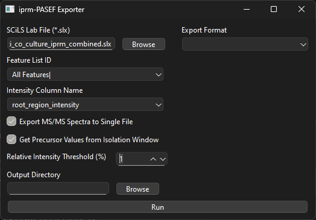
If mzML is selected as the export format, additional mzML export specific parameters become available. Please note that mzML export is still a work in progress as some essential metadata in mzML files can be difficult to obtain from *.slx files.
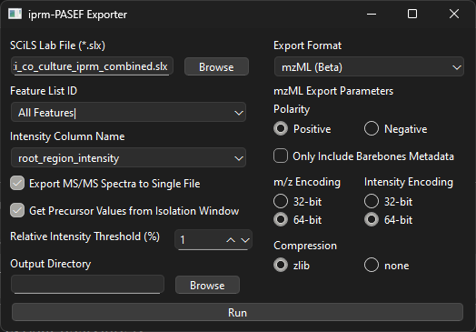
The polarity of the dataset needs to be manually selected.
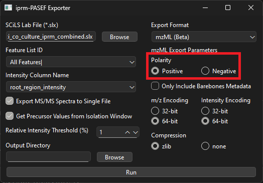
An option is also available to only include absolutely necessary metadata. This has the potential to allow or break compatibility with certain third party software.
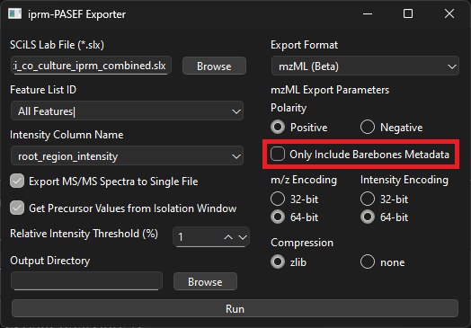
Lastly, the binary data array encoding (32-bit or 64-bit) and compression (zlib or none) methods can be selected.
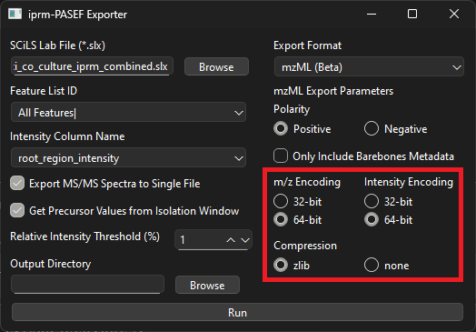
Please note that the mzML export may be missing crucial metadata for certain open-source analysis platforms.
Command Line¶
First, the UUID of a feature table of interest must be obtained. This can be done using the get_feature_lists command.
get_feature_lists --scils /path/to/iprmpasef_imaging_data.slx
Next, the name of the column containing intensity values or statistical values used for feature sorting/prioritization must be provided. If the name of the column is unknown, the get_intensity_column_names command can be used.
get_intensity_column_names --scils /path/to/ms1_imaging_data.slx --feature_list_id 1ab234cd-5ef6-789a-bcde-f0ab123cd4ef
By default, the intensity column that is included following T-ReX^3 feature finding for iprm-PASEF SCiLS Lab projects uses non-normalized intensity values. Therefore, a custom intensity column containing normalized intensity values should be added prior to MS/MS export if desired.
Finally, the iprmpasef_to_mgf or iprmpasef_to_mzml command can be used to export all fragmentation data to *.mgf or *.mzML file(s) to be used for downstream analysis.
iprmpasef_to_mgf --scils /path/to/ms1_imaging_data.slx --feature_list_id 1ab234cd-5ef6-789a-bcde-f0ab123cd4ef --intensity_column_name tic_intensity --outdir /path/to/output_directory --relative_intensity_threshold 1iprmpasef_to_mzml --scils /path/to/ms1_imaging_data.slx --feature_list_id 1ab234cd-5ef6-789a-bcde-f0ab123cd4ef --intensity_column_name tic_intensity --outdir /path/to/output_directory --relative_intensity_threshold 1 --polarity positive
If the –get_precursor_from_isolation_window flag is used, the precursor ion information is populated using the isolation window m/z and 1/K0 ranges. Otherwise, the precursor ion information (m/z and 1/K0) is obtained from any detected precursor features in the iprm-PASEF MS/MS dataset’s feature table. By default, this option is enabled as the precursors that are detected from the iprm-PASEF MS/MS dataset can be inaccurate in certain cases. As an example, if a precursor is completely fragmented and no precursor signal remains in the dataset but a noise peak is detected within the isolation window, a false and inaccurate value will be assigned as the “precursor”.
If the –get_precursor_from_isolation_window flag is used is not selected, the precursor ion information (m/z and 1/K0) is obtained from any detected precursor features in the iprm-PASEF MS/MS dataset’s feature table. If no precursor is detected for a given precursor isolation window, the precursor ion information is populated using the isolation window m/z and 1/K0 ranges as a fallback.
By default, all fragments peaks with a relative intensity of < 1% are discarded prior to export. This percentage can be modified. To disable thresholding completely, set the value to 0%.
Please note that the mzML export may be missing crucial metadata for certain open-source analysis platforms.
For a full list of parameters, use the following commands:
iprmpasef_to_mgf --helpiprmpasef_to_mzml --help